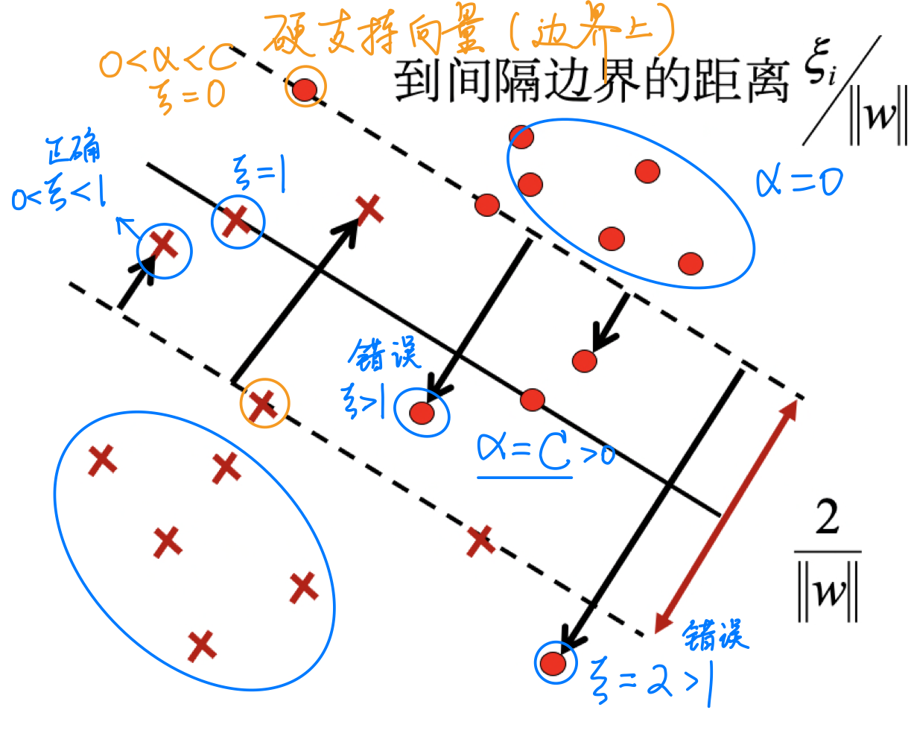
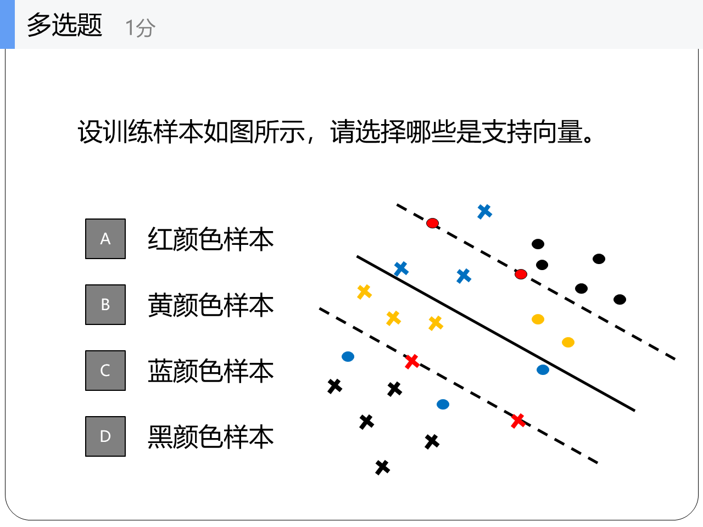
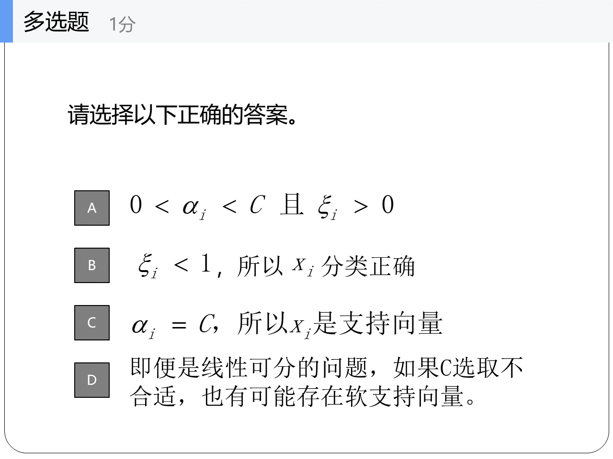

SVM

1. Linearly Separable
线性可分训练集：
- 类标记只有 +1、-1 两种取值，即 \(y_i \in \{+1, -1\}\)
- 通过间隔最大化得到分类超平面 \(\boldsymbol{w^T}\boldsymbol{x} + b = 0\)
- 决策函数 \(f(\boldsymbol{x}) = \text{sign} (\boldsymbol{w^T}\boldsymbol{x} + b)\)
1.1 函数间隔
超平面关于样本点的函数间隔为
超平面关于训练集 T 的函数间隔为：
1.2 几何间隔
类比函数间隔，除掉 w 的模长：
1.3 优化：间隔最大化
1.3.1 从最大化到最小化
目的：选取 \((w, b)\) ，使得超平面到两侧样本点的最小距离最大。
点到超平面的距离：
优化式：
由于后面的函数间隔的式子其实是可以随意缩放的，所以不妨把它固定为1（约束为1），最后得到的 \((w,b)\) 是一样的；于是优化式等价于：
继续等价变形：
支持向量：使约束条件等号成立的点构成支持向量。表现在图上就是两侧距离最优分界面最近的那些点。
1.3.2 Lagrangian Function
1.3.2.1 Lagrange Multiplier Method
拉格朗日乘数法与上述优化问题的区别是，前者的约束条件时等式，而现在却是不等式。
1.3.2.2 KKT
Karush-Kuhn-Tucker（KKT）条件是非线性规划（nonlinear programming）最佳解的必要条件。
KKT条件将 Lagrange乘数法（Lagrange multipliers）所处理涉及等式的约束优化问题推广至不等式。
与等式的最大区别：不等式乘上的 Lagrange Multiplier 多了一个非负的限制条件。
完整的 KKT 条件：
如果想解优化问题：
\[ \begin{aligned} &\min f(\boldsymbol{x}) \\ \text{s.t.} ~ g_j(\boldsymbol{x}) &= 0 ~ (j = 1, \dots, m) \\ h_k(\boldsymbol{x}) &\le 0 ~ (k = 1, \dots, p) \end{aligned} \]则定义 Lagrangian Function ：\(L(\boldsymbol{x}, \lambda, \mu) = f(\boldsymbol{x}) + \sum_j \lambda_j g_j(\boldsymbol{x}) + \sum_k \mu_k h_k(\boldsymbol{x})\)
根据最佳解满足的 KKT 必要条件：
\[ \begin{aligned} \nabla L &= 0 \\ g_j(\boldsymbol{x}) &= 0 ~ (j = 1, \dots, m) \\ h_k(\boldsymbol{x}) &\le 0 \\ \mu_k &\ge 0 \\ \mu_k h_k(\boldsymbol{x}) &= 0 ~ (k = 1, \dots, p) \end{aligned} \]可以解出相关的参数。
于是这里有：
（最后一个等式为「互补松弛性」（complementary slackness），
意思是要么是 \(\alpha_i = 0\) ，要么是样本 \((\boldsymbol{x_i}, y_i)\) 使后面的中括号等于0。）
建立 Lagrange 函数与原优化问题的关系：
因为后面的约束项是 ≤ 0 的，而 α 又非负，因此后面的求和项最大也不过是0。考虑：
如果 ≤ 0 的约束满足，那么该最大值为 \(\min_{\boldsymbol{w}, b} {1 \over 2} ||\boldsymbol{w}||^2\) ；如果不满足，则为 \(+\infty\) 。因此，对该最大值再取最小值的结果是统一的：
至此，我们找到了原优化问题的等价式！
1.3.3 Duality
但其实上面的先取 max 再取 min 的东西还不好算，因此继续转化为「对偶问题」。
根据：弱对偶关系：「极大的极小 ≥ 极小的极大」（“凤尾 ≥ 鸡头”），有：
而满足 KKT 条件时不等号变为等号，即强对偶成立，因此原问题最终转化为：
1.3.4 Solution
1) \(L\) 对 \(\boldsymbol{w}, b\) 分别求偏导，令结果为0，产生两个等式。
2) 将两个等式代入 \(L\) ，等价变形，可将优化问题转化为：
3) 利用第二行的约束条件，可以求解 α ：
先利用样本标签与 α 乘积求和的式子消去一个 α 。
再代入第一行，得到关于 α 的：\(s(\alpha_i, \dots, \alpha_{n-1})\) 表达式。
通过令偏导等于0，可以求出极值点 \((\alpha_i, \dots, \alpha_{n-1})\) 。
i）若极值点满足每个 α 非负，则找到了一组 α 。
ii）若不满足每个 α 非负，说明最小值在边界上！那么就需要检查每个 α = 0 的边界情况，从中选取使得 \(s\) 最小的一组 α 。
4) 确定了 α ，接下来求解超平面。
结合 KKT 条件，可以得到：
其中，\((\boldsymbol{x_k}, y_k)\) 为某 \(\alpha_k \neq 0\) 对应的样本。
i.e. 选定某 \(\alpha_k \neq 0\) ，将其对应的样本代入“固定”，然后再根据求和符号遍历所有样本，计算出 \(b^*\) 。
5) 写出超平面，以及决策函数。
2. Linearly Inseparable
2.1 Slack Variable 松弛变量
Slack variable 松弛变量 \(\xi\) 表示无法满足“函数距离大于1”的样本距离满足该条件还差的最小“距离”。

线性不可分时，比存在 \(\xi_i > 0\) ，因此将优化问题改为让 \(\xi_i\) 求和最小，也就是离完全分开差得最少。
2.2 Soft Margin Maximization 软间隔最大化
类比线性可分的情况，此时优化问题为：
其中，\(C > 0\) 是对误分类的惩罚程度。
同样地，通过简化，优化问题可变形为：
（线性可分对应 \(C \rightarrow +\infty\) ，意思是对 \(\alpha\) 无上限约束。）
在实际求解过程中，与之前线性可分求解过程的区别：
将选取某 \(\alpha_k \neq 0\) 改为选取某 \(0 < \alpha_k < C\) ，然后代入其对应的样本，求解 \(b^*\) 。
2.3 Support Vector 支持向量

所有 \(\alpha > 0\) 对应的样本都是支持向量。 i.e. 除了不在间隔边界上的正确样本，都是支持向量。
从（正确分类的）外到内，依次有：
- 不在间隔边界上的正确样本， \(\alpha = 0, ~ \xi = 0?\) ，不是支持向量。
- 在间隔边界上的正确样本， \(0 < \alpha < C, ~ \xi = 0\) ，是（硬）支持向量。
- 在间隔边界之间，恒有 \(\alpha = C\) ：
- 间隔边界与超平面之间的正确样本， \(0 < \xi < 1\) 。
- 超平面上， \(\xi = 1\) 。
- 间隔边界与超平面之间的错误样本， \(\xi > 1\) 。
例题： 
除了 D 都是。注意蓝色样本都是分类错误的。

（BCD。D：\(C\) 选取很小，会导致无法满足 \(0 < \alpha < C\) ，产生软支持向量。）
3. Nonlinear classification 非线性分类
用一个映射函数将输入空间 \(X\) 映射到 \(H\) ： $$ \phi(\boldsymbol{x}): ~ X \rightarrow H $$ 则原来优化式中的 \(\boldsymbol{x_i}^T \boldsymbol{x_j}\) 变为 \(\phi(\boldsymbol{x_i})^T \phi(\boldsymbol{x_j})\) 。
引入核函数 \(K(\boldsymbol{x}, \boldsymbol{z})\) ：核函数需满足 \(\exists ~ \phi, ~ \text{s.t.} K(\boldsymbol{x}, \boldsymbol{z}) = \phi(\boldsymbol{x})^T \phi(\boldsymbol{z})\) 。
则原来优化式和求解过程中的 \(\boldsymbol{x_i}^T \boldsymbol{x_j}\) 变为 \(K(\boldsymbol{x_i},\boldsymbol{x_j})\) ，i.e. 把所有样本之间的点积换成核函数。
数学上可以根据定理直接判断一个函数是否是核函数，而不必寻找 \(\phi\) 。
常用的核函数：

4. Multi-class Classification
一对多：某类为正类，其余为负。最后选取的分类是具有最大分类函数值的那类。
一对一：任意两类构造一个 SVM 分类。最后用「投票法」决定分类。
层次法：所有类先分为两大类，每大类再各分两子类……
5. Related Application
Text classification:
每个文本可以表示为一个向量：
其中， \(w_{i, j}\) 表示词项 \(i\) 在文档 \(j\) 中的权重。
5.1 TF 权重
Term Frequency ： \(\text{tf}_{ij}\) 表示词项 \(i\) 在文档 \(j\) 中出现的次数。
5.2 DF、IDF 权重
Document Frequency 文档频率： \(\text{df}_{i}\) 表示出现词项 \(i\) 的文档数
Inverse Document Frequency 逆文档频率： \(\text{idf}_{i} = \log({N \over \text{df}_i})\) ，其中 \(N\) 是总文档数。
- 常用词的 IDF 小，非常用词的 IDF 大（分母小，特征强）。
5.3 TF-IDF
即 \(\text{tf}_{i} \cdot \text{idf}_{i}\) 。
某一特定文件内的高词语频率，
以及该词语在整个文件集合中的低文件频率，
可以产生出高 TF-IDF 。